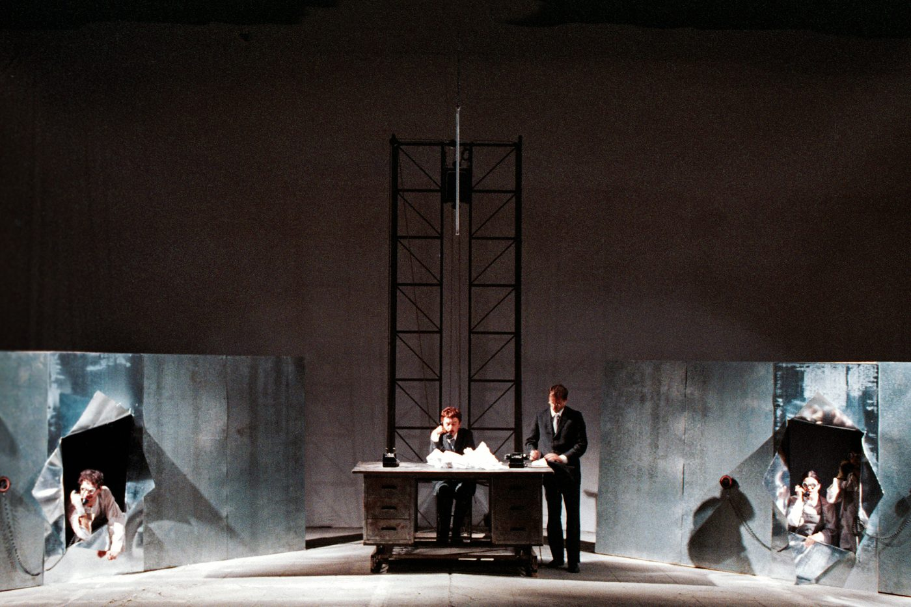
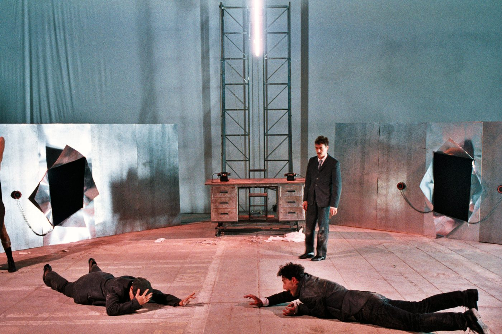
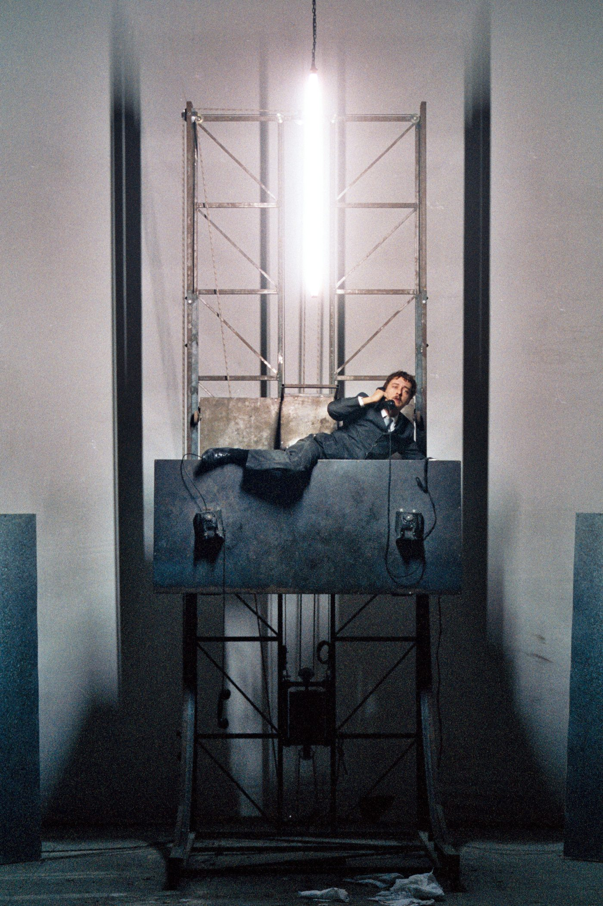

Nel 1998, ai Cantieri Culturali alla Zisa di Palermo, in occasione del Festival sul Novecento, Cristian Taraborrelli firma scene e costumi de Il Processo di Franz Kafka per la regia di Giorgio Barberio Corsetti. Lo spettacolo, debuttato il 1° ottobre 1998 nello Spazio Zero, vincerà nella stagione successiva il Premio Ubu come Spettacolo dell'anno 1999 — il più importante riconoscimento del teatro italiano.
È il vertice di un sodalizio artistico che attraversa due decenni: Corsetti aveva già lavorato sul corpus kafkiano con America (1992) e Il Castello (1995). Il Processo chiude la trilogia, e la chiude trasformando il romanzo postumo del 1925 in una macchina teatrale mobile, fatta di installazioni che si dissolvono e riaffiorano: l'ufficio di K. è un'installazione sul tema del ferro, lo studio del pittore Titorelli vive tra tele e tessuti, le impalcature elementari delimitano spazi aerei come tribunali sospesi.
In scena, fra gli interpreti, l'allora giovanissimo Filippo Timi, accanto a Gabriele Benedetti, Milena Costanzo, Federica Santoro, Alessia Berardi e Roberto Rustioni. Da questo Kafka nascerà pochi anni dopo la compagnia Fattore K. — il cui nome stesso è un omaggio al protagonista del romanzo.
In 1998, at the Cantieri Culturali alla Zisa in Palermo, as part of the Festival sul Novecento, Cristian Taraborrelli designed sets and costumes for The Trial by Franz Kafka, directed by Giorgio Barberio Corsetti. The production, which premiered on 1 October 1998 in the Spazio Zero, would go on to win the following season the Ubu Prize as Production of the Year 1999 — Italy's most important theatre award.
It is the summit of an artistic partnership that runs across two decades: Corsetti had already worked on the Kafka corpus with America (1992) and The Castle (1995). The Trial closes the trilogy, and does so by turning the posthumous 1925 novel into a theatrical machine, built of installations that dissolve and re-emerge: K.'s office is an installation on the theme of iron, the painter Titorelli's studio lives among canvases and fabrics, elementary scaffoldings mark out aerial spaces like suspended tribunals.
On stage, among the performers, the very young Filippo Timi, alongside Gabriele Benedetti, Milena Costanzo, Federica Santoro, Alessia Berardi and Roberto Rustioni. From this Kafka would be born, a few years later, the company Fattore K. — whose very name is a homage to the protagonist of the novel.
En 1998, aux Cantieri Culturali alla Zisa de Palerme, à l'occasion du Festival sul Novecento, Cristian Taraborrelli signe les décors et costumes du Procès de Franz Kafka pour la mise en scène de Giorgio Barberio Corsetti. Le spectacle, créé le 1er octobre 1998 dans le Spazio Zero, remporta la saison suivante le Prix Ubu du Spectacle de l'année 1999 — la plus importante récompense du théâtre italien.
C'est le sommet d'une collaboration artistique qui traverse deux décennies : Corsetti avait déjà travaillé sur le corpus kafkaïen avec Amérique (1992) et Le Château (1995). Le Procès ferme la trilogie, et le fait en transformant le roman posthume de 1925 en une machine théâtrale mobile, faite d'installations qui se dissolvent et réapparaissent : le bureau de K. est une installation sur le thème du fer, l'atelier du peintre Titorelli vit parmi toiles et tissus, des échafaudages élémentaires délimitent des espaces aériens comme des tribunaux suspendus.
Sur le plateau, parmi les interprètes, le très jeune Filippo Timi, aux côtés de Gabriele Benedetti, Milena Costanzo, Federica Santoro, Alessia Berardi et Roberto Rustioni. De ce Kafka naîtra, quelques années plus tard, la compagnie Fattore K. — dont le nom même est un hommage au protagoniste du roman.
L'Opera — Il Processo di Kafka
Der Process è il romanzo capolavoro di Franz Kafka, scritto fra il 1914 e il 1915 e pubblicato postumo nel 1925 dall'amico Max Brod, contro l'esplicita volontà dell'autore che ne aveva chiesto la distruzione. Brod, esecutore testamentario, scelse di salvare i manoscritti: il mondo deve a quella disobbedienza tre fra i romanzi più influenti del Novecento — Il Processo, Il Castello, America.
Josef K., bancario di trent'anni, si sveglia un mattino e scopre di essere in arresto. Non gli viene comunicato il capo d'accusa, non gli viene comunicato il tribunale: la macchina giuridica si è messa in moto e procede sotto di lui, sopra di lui, attorno a lui, fino all'esecuzione finale «come un cane». L'incubo burocratico diventa il più preciso ritratto del Novecento prima ancora che il Novecento accadesse.
Praga, di lingua tedesca ed ebrea: Kafka scriveva da quel triplice esilio interno, e il Processo è anche e soprattutto questo — un libro sull'impossibilità del cittadino di sapere quale legge lo accusa. Per Corsetti e Taraborrelli, alla fine degli anni Novanta, era il romanzo da cui il Novecento andava fatto uscire: lo spettro burocratico contemporaneo, la giustizia opaca, il potere senza volto.
Der Process is Franz Kafka's masterpiece, written between 1914 and 1915 and published posthumously in 1925 by his friend Max Brod, against the explicit will of the author who had asked for its destruction. Brod, the literary executor, chose to save the manuscripts: the world owes to that disobedience three of the most influential novels of the twentieth century — The Trial, The Castle, Amerika.
Josef K., a thirty-year-old banker, wakes one morning to discover he is under arrest. He is told neither the charge nor the tribunal: the juridical machine has set itself in motion and proceeds below him, above him, around him, all the way to the final execution «like a dog». The bureaucratic nightmare becomes the most precise portrait of the twentieth century before the twentieth century had even happened.
Prague, German-speaking and Jewish: Kafka wrote from that triple internal exile, and The Trial is also and above all this — a book about the impossibility for the citizen of knowing which law accuses him. For Corsetti and Taraborrelli, at the end of the Nineties, it was the novel out of which the twentieth century was to be brought: the contemporary bureaucratic spectre, opaque justice, faceless power.
Der Process est le chef-d'œuvre de Franz Kafka, écrit entre 1914 et 1915 et publié à titre posthume en 1925 par son ami Max Brod, contre la volonté explicite de l'auteur qui en avait demandé la destruction. Brod, exécuteur testamentaire, choisit de sauver les manuscrits : le monde doit à cette désobéissance trois des romans les plus influents du XXe siècle — Le Procès, Le Château, Amérique.
Josef K., banquier de trente ans, se réveille un matin et découvre qu'il est en état d'arrestation. On ne lui communique ni le chef d'accusation, ni le tribunal : la machine juridique s'est mise en marche et avance sous lui, au-dessus de lui, autour de lui, jusqu'à l'exécution finale «comme un chien». Le cauchemar bureaucratique devient le portrait le plus précis du XXe siècle avant même que le XXe siècle ne soit advenu.
Prague, de langue allemande et juive : Kafka écrivait depuis ce triple exil intérieur, et Le Procès est aussi et surtout cela — un livre sur l'impossibilité pour le citoyen de savoir quelle loi l'accuse. Pour Corsetti et Taraborrelli, à la fin des années 1990, c'était le roman duquel il fallait faire sortir le XXe siècle : le spectre bureaucratique contemporain, la justice opaque, le pouvoir sans visage.
Mini-bio — Franz Kafka (1883–1924)
Praghese di lingua tedesca, di famiglia ebraica, Franz Kafka nasce nel 1883 nell'impero austro-ungarico e muore nel 1924 di tubercolosi, a quarant'anni, senza aver pubblicato in vita nessuno dei tre grandi romanzi che lo renderanno uno dei massimi scrittori del Novecento. Lavora tutta la vita come funzionario di un'assicurazione contro gli infortuni sul lavoro: la burocrazia che racconta la conosce in prima persona.
Scrive di notte, in tedesco, e in vita pubblica solo racconti — La metamorfosi (1915), Nella colonia penale (1919), Un medico di campagna (1919). I romanzi America, Il Processo e Il Castello, tutti incompiuti, vengono salvati e pubblicati dall'amico Max Brod dopo la sua morte. Da allora kafkiano è diventato un aggettivo della lingua mondiale: vale a dire incomprensibile, opprimente, privo di uscita.
A Prague German-speaker from a Jewish family, Franz Kafka was born in 1883 in the Austro-Hungarian Empire and died of tuberculosis in 1924, at forty, without having published any of the three great novels that would make him one of the major writers of the twentieth century. He worked all his life as a clerk of a workers' accident insurance institute: the bureaucracy he describes he knew first-hand.
He wrote at night, in German, and in his lifetime published only short stories — The Metamorphosis (1915), In the Penal Colony (1919), A Country Doctor (1919). The novels Amerika, The Trial and The Castle, all unfinished, were saved and published by his friend Max Brod after his death. Since then kafkaesque has become an adjective of the world's languages: it means incomprehensible, oppressive, without exit.
Praguois de langue allemande, de famille juive, Franz Kafka naît en 1883 dans l'Empire austro-hongrois et meurt de tuberculose en 1924, à quarante ans, sans avoir publié de son vivant aucun des trois grands romans qui feront de lui l'un des plus grands écrivains du XXe siècle. Il travaille toute sa vie comme employé d'une compagnie d'assurances contre les accidents du travail : la bureaucratie qu'il raconte, il la connaît de l'intérieur.
Il écrit la nuit, en allemand, et ne publie de son vivant que des nouvelles — La Métamorphose (1915), Dans la colonie pénitentiaire (1919), Un médecin de campagne (1919). Les romans Amérique, Le Procès et Le Château, tous inachevés, sont sauvés et publiés par son ami Max Brod après sa mort. Depuis lors kafkaïen est devenu un adjectif des langues du monde : il signifie incompréhensible, oppressant, sans issue.
La Visione — Macchine teatrali kafkiane
La scenografia di Cristian Taraborrelli per Il Processo rifiuta da subito qualsiasi figurazione realistica del tribunale: lavora invece per installazioni mobili, ognuna costruita attorno a un materiale-tema. L'ufficio di Josef K. è un'installazione sul ferro: scrivanie, cancelli, schedari, pareti metalliche che riflettono e moltiplicano lo spazio fino a renderlo claustrofobico. La burocrazia diventa materia — non immagine, non simbolo, ma sostanza fisica che pesa.
Lo studio del pittore Titorelli, che dipinge giudici in serie, è al contrario un'installazione sul tessile: tele dipinte, drappi, pareti di stoffa che il personaggio attraversa come se passasse da un quadro all'altro. Le impalcature elementari — in metallo, leggere, smontabili — delimitano spazi aerei: tribunali sospesi, soffitte di Huld, anticamere senza pavimento. Lo spettatore vede gli attori in alto, sopra di sé, come se la giustizia kafkiana abitasse al piano sopra senza che si possa mai raggiungerla.
È una scenografia che si fa drammaturgia: ogni installazione è un'inquadratura del romanzo, ogni materiale è un capitolo. La macchina si compone e si decompone sotto gli occhi del pubblico, esattamente come la macchina giuridica di Kafka si avvicina e si allontana da Josef K. senza che lui ne possa mai afferrare la geometria.
Cristian Taraborrelli's scenography for The Trial refuses from the outset any realistic figuration of the tribunal: it works instead through mobile installations, each one built around a material-theme. Josef K.'s office is an installation on iron: desks, gates, filing cabinets, metallic walls that reflect and multiply the space until it becomes claustrophobic. Bureaucracy becomes matter — not image, not symbol, but physical substance that weighs.
The studio of the painter Titorelli, who paints judges in series, is on the contrary an installation on textiles: painted canvases, drapes, walls of fabric that the character crosses as though passing from one painting to another. Elementary scaffoldings — metal, light, demountable — mark out aerial spaces: suspended tribunals, Huld's attics, antechambers without floors. The audience sees the actors high above, as though Kafkaesque justice lived on the floor above and could never be reached.
It is a scenography that becomes dramaturgy: every installation is a frame of the novel, every material a chapter. The machine assembles and disassembles before the audience's eyes, exactly as Kafka's juridical machine approaches and recedes from Josef K. without his ever being able to grasp its geometry.
La scénographie de Cristian Taraborrelli pour Le Procès refuse d'emblée toute figuration réaliste du tribunal : elle travaille au contraire par installations mobiles, chacune construite autour d'un matériau-thème. Le bureau de Josef K. est une installation sur le fer : bureaux, grilles, classeurs, parois métalliques qui reflètent et multiplient l'espace jusqu'à le rendre claustrophobe. La bureaucratie devient matière — non image, non symbole, mais substance physique qui pèse.
L'atelier du peintre Titorelli, qui peint des juges en série, est au contraire une installation sur le textile : toiles peintes, draperies, parois d'étoffe que le personnage traverse comme s'il passait d'un tableau à l'autre. Des échafaudages élémentaires — métalliques, légers, démontables — délimitent des espaces aériens : tribunaux suspendus, mansardes de Huld, antichambres sans plancher. Le spectateur voit les acteurs en hauteur, au-dessus de lui, comme si la justice kafkaïenne habitait l'étage supérieur sans qu'on puisse jamais l'atteindre.
C'est une scénographie qui devient dramaturgie : chaque installation est un cadre du roman, chaque matériau un chapitre. La machine se compose et se décompose sous les yeux du public, exactement comme la machine juridique de Kafka s'approche et s'éloigne de Josef K. sans qu'il puisse jamais en saisir la géométrie.
Galleria — Foto di scena




Il Premio Ubu 1999
Il Premio Ubu è il più importante riconoscimento del teatro italiano. Fondato nel 1977-78 dal critico Franco Quadri, deve il proprio nome al re grottesco di Alfred Jarry — Ubu Roi — e funziona come l'equivalente italiano dei Tony Award di Broadway o degli Olivier Award londinesi. La giuria, composta da più di sessanta critici teatrali italiani, vota ogni anno il miglior spettacolo della stagione, la migliore regia, la migliore scenografia, le migliori interpretazioni.
L'attribuzione dell'Ubu come Spettacolo dell'anno ha un peso quasi sacrale in Italia: nelle stagioni precedenti era stato dato a produzioni di Strehler, Ronconi, Castri, Carmelo Bene. Vincere l'Ubu vuol dire essere riconosciuti dall'intera comunità critica del Paese come l'evento dell'anno teatrale italiano. Il Processo di Corsetti-Taraborrelli si aggiudica questo titolo nella stagione 1998-99: la trilogia kafkiana entra così nella storia ufficiale del teatro italiano.
The Ubu Prize is the most important Italian theatre award. Founded in 1977-78 by the critic Franco Quadri, it owes its name to Alfred Jarry's grotesque king — Ubu Roi — and functions as the Italian equivalent of Broadway's Tony Awards or London's Olivier Awards. The jury, made up of more than sixty Italian theatre critics, votes every year for the best production of the season, best direction, best set design, best performances.
Winning the Ubu as Production of the Year has an almost sacred weight in Italy: in the previous seasons it had been awarded to productions by Strehler, Ronconi, Castri, Carmelo Bene. To win the Ubu means being recognised by the entire critical community of the country as the event of the Italian theatre year. The Trial by Corsetti and Taraborrelli wins this title in the 1998-99 season: the Kafka trilogy thus enters the official history of Italian theatre.
Le Prix Ubu est la plus importante récompense du théâtre italien. Fondé en 1977-78 par le critique Franco Quadri, il doit son nom au roi grotesque d'Alfred Jarry — Ubu Roi — et fonctionne comme l'équivalent italien des Tony Awards de Broadway ou des Olivier Awards de Londres. Le jury, composé de plus de soixante critiques de théâtre italiens, vote chaque année le meilleur spectacle de la saison, la meilleure mise en scène, la meilleure scénographie, les meilleures interprétations.
Recevoir l'Ubu du Spectacle de l'année a un poids presque sacré en Italie : les saisons précédentes l'avaient attribué à des productions de Strehler, Ronconi, Castri, Carmelo Bene. Gagner l'Ubu signifie être reconnu par toute la communauté critique du pays comme l'événement de l'année théâtrale italienne. Le Procès de Corsetti et Taraborrelli remporte ce titre lors de la saison 1998-99 : la trilogie kafkaïenne entre ainsi dans l'histoire officielle du théâtre italien.
La Collaborazione — Cristian × Corsetti
Il sodalizio fra Cristian Taraborrelli e Giorgio Barberio Corsetti è uno degli incontri più produttivi del teatro italiano contemporaneo. Comincia negli anni Novanta sul terreno della prosa sperimentale — la trilogia kafkiana che culmina nel Processo — e prosegue per oltre vent'anni, attraversando il Gertrude (Le Cri) di Howard Barker al Théâtre de l'Odéon di Parigi (2009) e una lunga serie di produzioni liriche internazionali: Turandot e Macbeth alla Scala, La Belle Hélène al Mariinskij, Pagliacci-AR a Roma.
Quello che li unisce è un'idea di scena come dispositivo: lo spazio teatrale non è mai contenitore di significati, è macchina che li produce. Per Corsetti la regia è sempre stata, fin dagli anni della Gaia Scienza (1976), il luogo del confine fra teatro, video, danza, arti visive. Per Taraborrelli la scenografia è una installazione abitata: un'opera plastica che gli attori attivano col corpo. Da quest'incontro nasce un linguaggio che ha rinnovato la scena italiana e che Il Processo ha consacrato col Premio Ubu.
The partnership between Cristian Taraborrelli and Giorgio Barberio Corsetti is one of the most productive encounters of contemporary Italian theatre. It begins in the Nineties on the terrain of experimental drama — the Kafka trilogy that culminates in The Trial — and continues for more than twenty years, passing through Howard Barker's Gertrude (Le Cri) at the Théâtre de l'Odéon in Paris (2009) and a long series of international opera productions: Turandot and Macbeth at La Scala, La Belle Hélène at the Mariinsky, Pagliacci-AR in Rome.
What unites them is an idea of the stage as a device: theatrical space is never a container of meanings, but a machine that produces them. For Corsetti, since the years of La Gaia Scienza (1976), direction has always been the place at the frontier between theatre, video, dance and visual arts. For Taraborrelli, scenography is an inhabited installation: a plastic work that the actors activate with their bodies. From this encounter a language is born that has renewed the Italian stage, and that The Trial consecrated with the Ubu Prize.
La collaboration entre Cristian Taraborrelli et Giorgio Barberio Corsetti est l'une des rencontres les plus fécondes du théâtre italien contemporain. Elle commence dans les années 1990 sur le terrain de la prose expérimentale — la trilogie kafkaïenne qui culmine dans Le Procès — et se poursuit pendant plus de vingt ans, à travers Gertrude (Le Cri) de Howard Barker au Théâtre de l'Odéon à Paris (2009) et une longue série de productions lyriques internationales : Turandot et Macbeth à la Scala, La Belle Hélène au Mariinsky, Pagliacci-AR à Rome.
Ce qui les unit, c'est une idée de la scène comme dispositif : l'espace théâtral n'est jamais un contenant de significations, c'est une machine qui les produit. Pour Corsetti, depuis La Gaia Scienza (1976), la mise en scène est le lieu de la frontière entre théâtre, vidéo, danse et arts visuels. Pour Taraborrelli, la scénographie est une installation habitée : une œuvre plastique que les acteurs activent avec leur corps. De cette rencontre naît un langage qui a renouvelé la scène italienne, et que Le Procès a consacré avec le Prix Ubu.
Curiosità
Una trilogia kafkiana lunga sette anni. Il Processo chiude la trilogia kafkiana di Barberio Corsetti, iniziata nel 1992 con America e proseguita nel 1995 con Il Castello. Tre romanzi postumi, tre adattamenti che hanno segnato gli anni Novanta del teatro italiano sperimentale.
Il giovane Filippo Timi. Tra gli interpreti dello spettacolo c'è Filippo Timi, che nel 1998 era ancora un attore poco conosciuto. Il Processo è uno dei suoi primi grandi ruoli: di lì a poco diventerà uno dei volti più importanti del teatro e del cinema italiano.
Fattore K. nasce da qui. Pochi anni dopo lo spettacolo, nel 2001, Corsetti fonda la sua compagnia di produzione e ricerca: la chiamerà Fattore K., un omaggio diretto al Josef K. del romanzo di Kafka. Il Processo è quindi anche l'atto di nascita simbolico di una delle compagnie più importanti del teatro italiano contemporaneo.
Cantieri Culturali alla Zisa. La prima dello spettacolo avvenne in uno spazio simbolico per la cultura italiana: i Cantieri Culturali alla Zisa di Palermo, un'ex fabbrica di mobili convertita in centro per le arti contemporanee. La scelta dello Spazio Zero — un'enorme camera industriale dismessa — era essa stessa kafkiana: la giustizia di Josef K. abita esattamente quei luoghi anonimi e immensi.
Brod traditore, Brod salvatore. Kafka ordinò per testamento all'amico Max Brod di bruciare tutti i suoi manoscritti dopo la sua morte. Brod disobbedì e li pubblicò uno dopo l'altro a partire dal 1925. Senza quel tradimento, oggi non esisterebbero Il Processo, Il Castello, America — né lo spettacolo che porta il nome di Kafka al Premio Ubu del 1999.
A seven-year Kafka trilogy. The Trial closes the Kafka trilogy directed by Barberio Corsetti, begun in 1992 with Amerika and continued in 1995 with The Castle. Three posthumous novels, three adaptations that marked the Nineties of Italian experimental theatre.
The young Filippo Timi. Among the performers was Filippo Timi, who in 1998 was still a little-known actor. The Trial is one of his first major roles: shortly afterwards he would become one of the most important faces of Italian theatre and cinema.
Fattore K. is born from here. A few years after the show, in 2001, Corsetti founded his own production and research company: he called it Fattore K., a direct homage to Josef K. of Kafka's novel. The Trial is therefore also the symbolic birth certificate of one of the most important companies in contemporary Italian theatre.
Cantieri Culturali alla Zisa. The premiere took place in a symbolic space for Italian culture: the Cantieri Culturali alla Zisa in Palermo, a former furniture factory converted into a centre for contemporary arts. The choice of the Spazio Zero — an enormous disused industrial chamber — was itself Kafkaesque: Josef K.'s justice lives exactly in those anonymous and immense places.
Brod the traitor, Brod the saviour. Kafka ordered his friend Max Brod by testament to burn all his manuscripts after his death. Brod disobeyed and published them one after the other beginning in 1925. Without that betrayal, today neither The Trial, nor The Castle, nor Amerika would exist — nor the production that brought Kafka's name to the 1999 Ubu Prize.
Une trilogie kafkaïenne de sept ans. Le Procès ferme la trilogie kafkaïenne de Barberio Corsetti, commencée en 1992 avec Amérique et poursuivie en 1995 avec Le Château. Trois romans posthumes, trois adaptations qui ont marqué les années 1990 du théâtre italien expérimental.
Le jeune Filippo Timi. Parmi les interprètes du spectacle, Filippo Timi, qui en 1998 était encore un acteur peu connu. Le Procès est l'un de ses premiers grands rôles : peu après, il deviendra l'un des visages les plus importants du théâtre et du cinéma italiens.
Fattore K. naît d'ici. Quelques années après le spectacle, en 2001, Corsetti fonde sa propre compagnie de production et de recherche : il l'appellera Fattore K., hommage direct au Josef K. du roman de Kafka. Le Procès est donc aussi l'acte de naissance symbolique de l'une des compagnies les plus importantes du théâtre italien contemporain.
Cantieri Culturali alla Zisa. La création eut lieu dans un espace symbolique pour la culture italienne : les Cantieri Culturali alla Zisa de Palerme, ancienne fabrique de meubles convertie en centre des arts contemporains. Le choix du Spazio Zero — une énorme chambre industrielle désaffectée — était lui-même kafkaïen : la justice de Josef K. habite précisément ces lieux anonymes et immenses.
Brod traître, Brod sauveur. Kafka ordonna par testament à son ami Max Brod de brûler tous ses manuscrits après sa mort. Brod désobéit et les publia l'un après l'autre à partir de 1925. Sans cette trahison, n'existeraient aujourd'hui ni Le Procès, ni Le Château, ni Amérique — ni le spectacle qui a porté le nom de Kafka au Prix Ubu de 1999.
I Collaboratori
Regia
Giorgio Barberio Corsetti
Attore, drammaturgo e regista, fondatore della compagnia La Gaia Scienza nel 1976 e poi di Fattore K. (omaggio a Kafka) nel 2001. Direttore della Sezione Teatro della Biennale di Venezia dal 1999, dal 2019 al 2024 al Teatro di Roma. Lavora sul confine tra teatro, video, danza e arti visive. Con Cristian Taraborrelli costruisce un sodalizio ventennale che attraversa la prosa sperimentale (Kafka, Barker), l'opera lirica (Scala, Mariinskij, Opéra de Paris) e l'innovazione tecnologica (Pagliacci-AR).
Cast principale
Filippo Timi
Attore, scrittore e regista perugino (1974), formato all'Accademia Nazionale d'Arte Drammatica Silvio D'Amico. Il Processo di Kafka è uno dei suoi primi grandi spettacoli. Diventerà tra i più importanti attori italiani del Duemila al teatro (premio UBU 2003 come miglior attore non protagonista) e al cinema (David di Donatello con Vincere di Marco Bellocchio, 2009).
Cast
Gabriele Benedetti, Milena Costanzo, Federica Santoro, Alessia Berardi, Roberto Rustioni — ensemble di attori della scena sperimentale italiana di fine anni Novanta, molti formati nelle scuole della Biennale Teatro o legati al gruppo della Gaia Scienza.
Direction
Giorgio Barberio Corsetti
Actor, playwright and director, founder of La Gaia Scienza in 1976 and of Fattore K. (a tribute to Kafka) in 2001. Director of the Theatre Section of the Venice Biennale from 1999, from 2019 to 2024 artistic director of the Teatro di Roma. He works at the frontier of theatre, video, dance and visual arts. With Cristian Taraborrelli he builds a twenty-year partnership across experimental drama (Kafka, Barker), opera (La Scala, Mariinsky, Opéra de Paris) and technological innovation (Pagliacci-AR).
Lead cast
Filippo Timi
Actor, writer and director from Perugia (1974), trained at the Accademia Nazionale d'Arte Drammatica Silvio D'Amico. Kafka's The Trial is one of his first major productions. He would go on to become one of the leading Italian actors of the 2000s in theatre (UBU prize 2003 as best supporting actor) and cinema (David di Donatello with Marco Bellocchio's Vincere, 2009).
Cast
Gabriele Benedetti, Milena Costanzo, Federica Santoro, Alessia Berardi, Roberto Rustioni — an ensemble of actors of the late-Nineties Italian experimental scene, many of them trained at the Venice Biennale Theatre schools or close to the Gaia Scienza group.
Mise en scène
Giorgio Barberio Corsetti
Acteur, dramaturge et metteur en scène, fondateur de La Gaia Scienza en 1976 puis de Fattore K. (hommage à Kafka) en 2001. Directeur de la Section Théâtre de la Biennale de Venise à partir de 1999, de 2019 à 2024 directeur artistique du Teatro di Roma. Il travaille à la frontière du théâtre, de la vidéo, de la danse et des arts visuels. Avec Cristian Taraborrelli il construit une collaboration de vingt ans à travers la prose expérimentale (Kafka, Barker), l'opéra (La Scala, Mariinsky, Opéra de Paris) et l'innovation technologique (Pagliacci-AR).
Distribution principale
Filippo Timi
Acteur, écrivain et metteur en scène de Pérouse (1974), formé à l'Accademia Nazionale d'Arte Drammatica Silvio D'Amico. Le Procès de Kafka est l'un de ses premiers grands spectacles. Il deviendra l'un des principaux acteurs italiens des années 2000 au théâtre (Prix UBU 2003 du meilleur second rôle) et au cinéma (David di Donatello avec Vincere de Marco Bellocchio, 2009).
Distribution
Gabriele Benedetti, Milena Costanzo, Federica Santoro, Alessia Berardi, Roberto Rustioni — un ensemble d'acteurs de la scène expérimentale italienne de la fin des années 1990, beaucoup formés dans les écoles de la Biennale Théâtre de Venise ou proches du groupe de la Gaia Scienza.
Creative Team
Tags